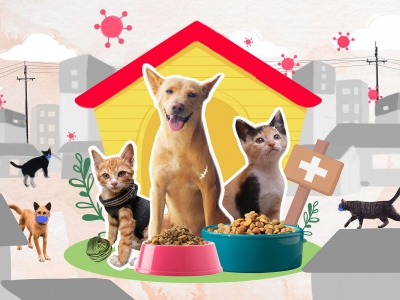

25
3 - 2022
CHÓ MÈO HOANG NƯƠNG NHỜ CỬA PHẬT, VẪN LÀ CHUYỆN NÃO NỀ
Thi thoảng chúng ta vẫn thấy trong một ngôi chùa sẽ có những con chó, con mèo nằm, ngồi thẫn thờ nơi góc sân. Bảo là...
17
4 - 2022
GIỚI TRẺ VÀ PHÚC LỢI ĐỘNG VẬT
Việc giảm bớt sự chịu đựng ở những động vật có tri giác sẽ tạo ra nhiều lợi ích không chỉ cho bản thân con vật mà còn cho cả...
1
3 - 2022
CHÚNG TÔI CHỌN CÁCH “CỨU SỐNG”!
Vừa qua, vụ việc một chủ nhà hàng tại TP. HCM đã đánh bả giết nguyên một bầy mèo hoang hơn chục cá thể, trong đó có những mèo...
25
3 - 2022
TẠI SAO PHẢI TRIỆT SẢN VÀ NUÔI KÍN CHÓ MÈO?
Cuộc sống bận rộn và buồn tẻ khiến cho việc có thêm thú cưng bầu bạn trở thành sự lựa chọn hoàn hảo. Hầu như mỗi gia đình đều...
17
4 - 2022
CHÚ CHÓ HỖ TRỢ CON NGƯỜI TRONG ĐẠI DỊCH
Giữa những bất ổn do đại dịch Covid 19 gây ra trong suốt 2 năm qua, thế giới lại may mắn đón nhận một chú chó được ví như...
1
3 - 2022
NHÂN ĐẠO TRONG QUY TRÌNH GIẾT MỔ
Luộc tôm cua dường như là việc làm quá đỗi quen thuộc của chúng ta hằng ngày, đặc biệt là tại các nhà hàng, quán ăn. Nhưng...
25
3 - 2022
MÈO ĐI RÔNG DÙ ĐÃ TRIỆT SẢN
Mèo đi rông dù đã triệt sản, vậy tại sao chủ nuôi phải triệt sản chỉ để phát sinh thêm một khoản phí khác? Bài viết lần này...
17
4 - 2022
ĂN THỊT CHÓ MÈO KHÔNG PHẢI LÀ MỘT PHẦN VĂN HÓA VIỆT
Luật thú y không quy định chó mèo thuộc đối tượng động vật được kiểm soát giết mổ, kiểm tra, giám sát chất lượng sản phẩm như...

1
3 - 2022
CHÓ MÈO KHÔNG LÂY VIRUS SARS COV - 2 CHO NGƯỜI
Thời gian diễn ra dịch bệnh này, trên khắp các trang mạng xã hội, ngay cả những tờ báo mạng lớn (nhưng giờ gần như đã không...
25
3 - 2022
VÌ CHÓ TA XỨNG ĐÁNG ĐƯỢC YÊU THƯƠNG
Mình chắc chắn rằng, không ít lần các bạn cũng đã từng nghe qua những câu dè bĩu quen thuộc, như: "Con chó cỏ này thì cần gì...
17
4 - 2022
VỚI CÁ NHÂN, SỐ LƯỢNG CHÓ MÈO ĐƯỢC NUÔI BAO NHIÊU LÀ ĐỦ?
Chúng mình không biết trước được ngày mai sẽ ra sao, khi dịch bệnh vẫn còn rất căng thẳng và đồng tiền làm ra cũng càng khó...
1
3 - 2022
ĐỪNG THẢ RÔNG
Mọi người nuôi chó mèo, làm ơn giữ cho kỹ, nuôi kín thật kín đi. Đừng để hớ hênh ra chúng nó lẻn đi, hay do bản thân suy nghĩ...
25
3 - 2022
CHÓ TÂY, CHÓ TA
Như một loại tâm lý tự nhiên, người ta thường chuộng hàng ngoại hơn hàng nội, vật liệu của nước ngoài bao giờ cũng tốt hơn...